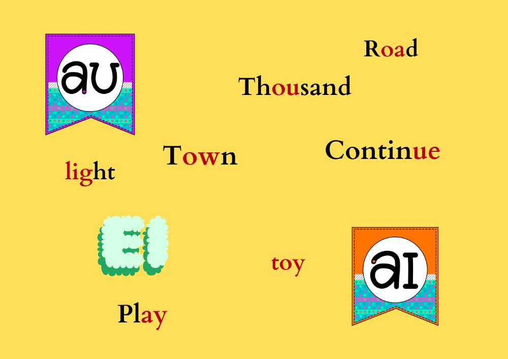

Today, we're going to embark on an exciting journey into the world of diphthongs and digraphs.
These are two special members of the alphabet family that work together to create unique and fascinating sounds.
Let's start with diphthongs.
It's a funny word, isn't it? Diphthongs are like friendly duos – they're made up of two vowel sounds that join forces to create a single, smooth sound.
It's like a vowel party happening right in your mouth!
Now, let's talk about digraphs. These are groups of two letters that make a single, special sound. It's like they're best friends who always stick together.